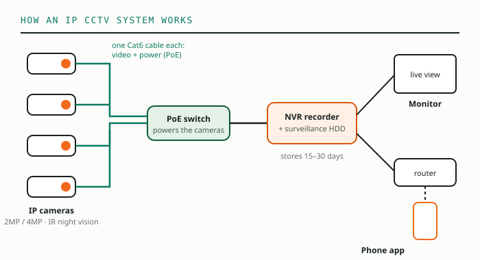

Most CCTV systems fail in one of two ways: too few cameras in the places that matter, or the wrong camera in the right place — a wide view where you needed to recognise a face, or a cheap indoor camera fighting Delhi's summer on an outside wall. Planning first avoids both.
Sound familiar?
- Something went missing, and the footage shows a blurred figure you cannot recognise?
- Your cameras cover the parking but not the gate, or the store but not the cash counter?
- Night footage is just a grey screen?
Good CCTV is not about the number of cameras. It is about the right camera at every point where something can happen.
Where cameras must go
- Every entrance and exit — the single most important view. Set it to recognise faces, not just movement.
- Cash counters and reception — a close view of the counter and the person standing at it.
- Corridors and staircases — they connect everything; one camera can cover a long corridor.
- Stock, store and server rooms — wherever valuable goods or equipment sit.
- Perimeter and parking — outdoor cameras with night vision.
- Work areas — factory floors, labs and open offices, for safety as much as security.
Which resolution?
More megapixels show more detail across a wider area, but they also need more storage. The sensible default for most business systems today is 4MP at entrances and counters and 2MP or 4MP elsewhere.
Lens angle matters as much as megapixels
- 2.8mm — very wide view (around 100°). Small rooms and receptions.
- 3.6–4mm — medium view. Offices, classrooms, shop floors.
- 6mm and above — narrow, long view. Gates, long corridors, a specific door far away.
- Varifocal — adjustable on site, useful when the distance is uncertain.
IP or HD analog?

IP cameras send video over a network cable, and with PoE the same cable carries power — one Cat6 cable per camera to a PoE switch and an NVR recorder. They offer higher resolution, smart detection and easy expansion. HD analog cameras use coaxial cable to a DVR. They cost less and suit small systems or upgrades that reuse old cabling. For new business installations, we usually recommend IP.
Indoor, outdoor and night vision
- Indoor: dome cameras — discreet and harder to tamper with.
- Outdoor: bullet or dome cameras rated IP66 or IP67 against dust and rain.
- Night vision: standard IR shows black-and-white images to about 20–30 metres. "Full-colour" night cameras use a small white light for colour at night — useful at gates and parking.
- Audio: some cameras record sound. Use it only where it is appropriate and people are informed.
Don't forget the rest of the system
The recorder needs a surveillance-grade hard disk sized for the days you want to keep (see the storage guide), the recorder and switch need a UPS, and every cable should be labelled. A camera is only as good as the system behind it.
We plan CCTV with a site visit: we walk the premises, mark every camera point, and give a written plan and quote. WhatsApp us to book one.
Common questions
How many CCTV cameras does a small office need?
Usually one per entrance and exit, one at reception or the cash counter, one per corridor and one for each important room such as stock, server or the main work area. A site visit gives the exact count.
Is 2MP enough for CCTV?
For general monitoring of small rooms and corridors, 2MP is fine. For wider areas, entrances where faces must be recognised and outdoor perimeters, 4MP or higher is the better choice.
Should we choose IP or HD analog cameras?
For new installations, IP cameras are usually better: higher resolution, one cable for power and video with PoE, easier expansion and better remote viewing. HD analog can still suit small, budget systems or upgrades that reuse existing coaxial cable.